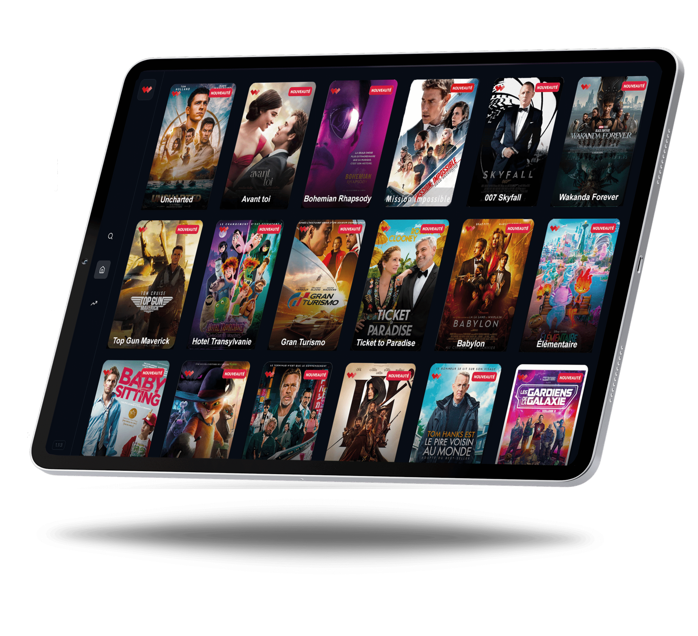
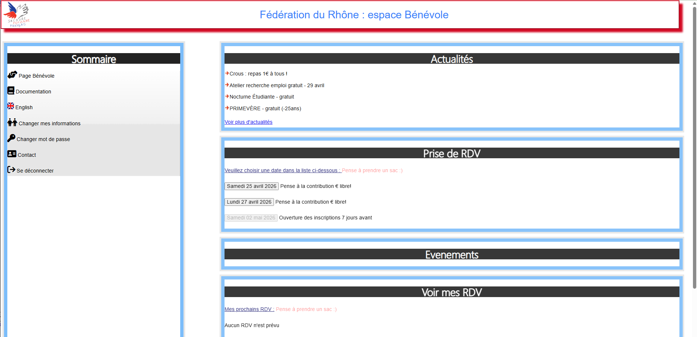
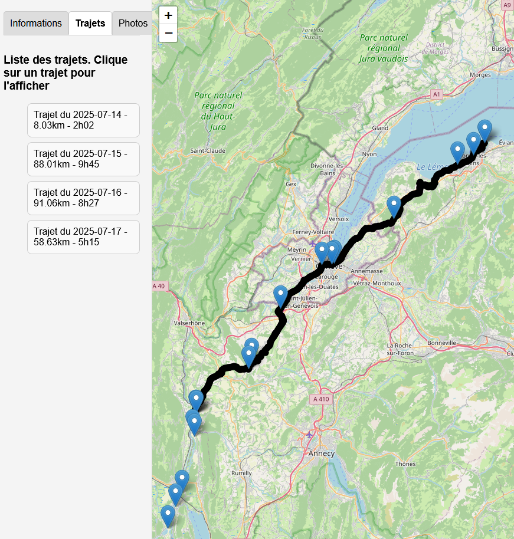
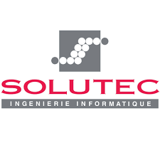
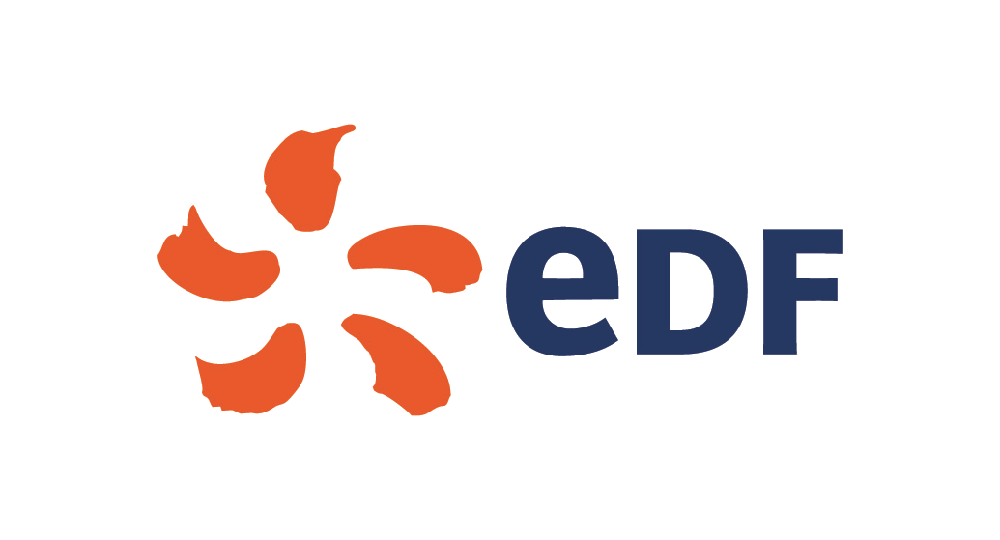
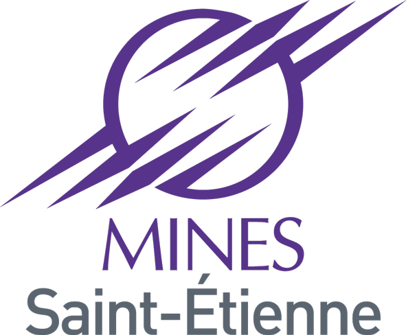

Exemples de projets professionnels
INRUCK
Chef de projet pour l’application mobile INRUCK, un réseau social destiné aux partenaires du CSA (club de rugby d’Annonay).
L’objectif était de créer une synergie entre les partenaires autour de la vie du club, sur les aspects sportifs et business.
Cycle en V : définition du besoin, spécifications fonctionnelles, cahier des charges technique,
conception, développement, tests, validation et mise en production.
Gestion des évolutions et forte coordination avec le club et les partenaires.

WiiVOD
Chef de projet pour un service de VOD destiné aux passagers connectés au WiFi WiiBus.
Exploration des solutions techniques, choix en fonction des contraintes liées aux environnements embarqués,
coordination avec les fournisseurs, les équipes internes et les développeurs.
Pilotage d’un partenariat avec une société hollywoodienne afin de valider la solution technique
et obtenir les droits de diffusion, puis mise en service et suivi opérationnel.

BoardInBus
Chef de projet pour l’application BoardInBus chez WiiBus.
Cycle en V : définition du besoin, spécifications fonctionnelles, cahier des charges technique,
conception détaillée, développement, tests, validation et mise en production.
Suivi opérationnel, relation client et gestion des évolutions.

Projets personnels
Secours Populaire : gestion de l'accueil des étudiants précaires
J’ai contribué à la création de l’aide étudiante au Secours Populaire. Très vite, la demande est devenue plus forte que nos prévisions et il a fallu adapter l’organisation.
J’ai alors lancé le projet d’un site web permettant aux étudiants de prendre rendez-vous en autonomie. Le site est en PHP et est en service depuis presque 10 ans.
Accéder au site (sans possibilité de me connecter).
D’autres aspects sont venus compléter le site ensuite, selon les besoins rencontrés lors des différents accueils.
Ce site, initialement prévu uniquement pour la fédération du Rhône, est désormais utilisé par d’autres antennes de l’association pour les accueils étudiants.

Suivi de mes aventures à vélo
Lorsque je me lance le défi de faire un parcours à vélo sur plusieurs jours, tout seul, mes amis et ma famille aiment avoir de mes nouvelles et savoir où j’en suis.
Sauf que cela prend du temps et de l’énergie. J’ai alors eu l’idée de créer Routiz, pour pouvoir me suivre en direct avec des photos.
Voir mon trajet de 2025
Je passe par Render gratuit, donc le chargement peut prendre environ 20 secondes.
Le site est en Python.

Mon parcours
Aujourd’hui
Recherche d’un nouveau challenge à Lyon (rayon 45min max en transport autour de Garibaldi). J’aime apprendre, évoluer et me confronter à de nouveaux sujets.
2020 - 2026 : WiiBus, Responsable IT
WiiBus est une TPE, dans la Drôme, qui est fournisseur d'accès à internet dans le milieu autocars.
• Intégration et déploiement de nouvelles solutions au sein du SI• Maintien en condition opérationnelle (MCO) des systèmes embarqués et des infrastructures serveurs
• Pilotage de projets techniques et R&D (services embarqués, supervision, outils internes)
• Intégration et déploiement de nouvelles solutions au sein du SI
• Intégration et déploiement de nouveaux services pour les clients
• Gestion des incidents, diagnostic et résolution
• Mise en place et amélioration continue de processus (exploitation, supervision, support, reporting)
• Gestion des relations techniques avec fournisseurs et clients (FR/EN)
• Encadrement de l'équipe informatique de 3 personnes
2019 - 2020 : Consultant Carrefour, intégrateur sur l’application Gold


Expérience en grand groupe, à la DSI supply, avec montée en autonomie.
• Déploiement et mise en service de l’application, des add-ons, de l’ordonnancement et des serveurs applicatifs
• Suivi opérationnel des environnements projets (dev, qualification, recette, préprod et prod)
• Gestion des mises en production et du suivi des montées de versions
• Présentation au CAB pour validation des mises en production
• Coordination avec les infogérants
• Diagnostic et résolution d’incidents en environnement de production
• Configuration des environnements serveurs et applicatifs (SSO, agents de supervision, logging)
• Intégration dans la première squad Carrefour (périmètre supply) pendant la mission.
2016 - 2019 : Consultant EDF, exploitant applicatif z/OS

Expérience en grand groupe avec montée en autonomie.
• Supervision des applications et suivi des indicateurs de production
• Maintien en condition opérationnelle des applications
• Gestion des incidents et analyse des dysfonctionnements, avec astreinte
• Réalisation des montées de version et suivi des mises en production
• Application des procédures d’exploitation et de gestion des changements
Cette mission, avec une charge de travail modérée, m’a permis, après la montée en compétences sur le poste, de m’auto-former en informatique : HTML, CSS, PHP, Laravel, Unix, etc.
2012 - 2015 : Iveco Bus Annonay, Alternance ingénieur

Iveco Bus conçoit et fabrique des Autobus, Autocars et chassis mécanisés pour Autocars (Eurorider). Je faisais partie de l'équipe méthodes mécaniques
• Industrialisation de la gamme de production Eurorider
• Pilotage de projets d’investissements industriels
• Analyse et optimisation des processus de production (amélioration continue)
• Suivi de ligne de production et support opérationnel
• Développement d’outils d’aide à la gestion de production (Excel VBA)
• Coordination avec les équipes techniques, le bureau d'études et la production
Contact
Discutons ensemble 👇